앞에 붙이는 1줄 요약 : 구라인듯 구라가 아닌듯 하게 오독할 수 있는 화법으로 어그로를 끄는 정치 어그로계 지하돌 계정이다.
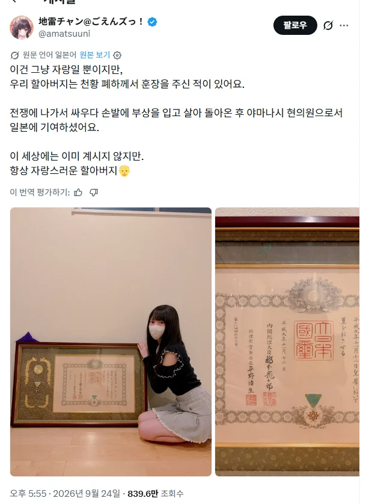
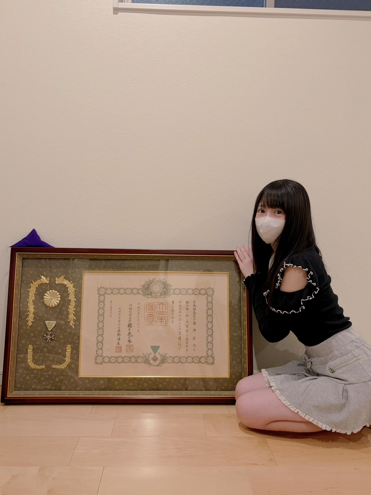
1. 존재하는 사람이긴 하지만 연령대가 안맞음.
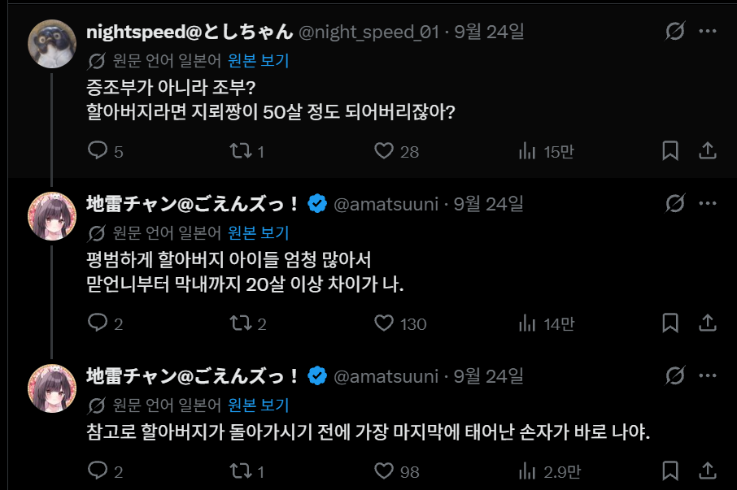
주장 : 할아버지는 엄청 많은 자식을 가졌고, 자기는 막내의 막내라서 그렇다고 주장중.
2. 해당 훈장은 전쟁이랑 아무 상관이 없는 훈 사등 서보장 勲四等瑞宝章이다.
헤이세이 천황이 1997년에 미쳤다고 태평양 전쟁 훈장을 내리지 않았다.
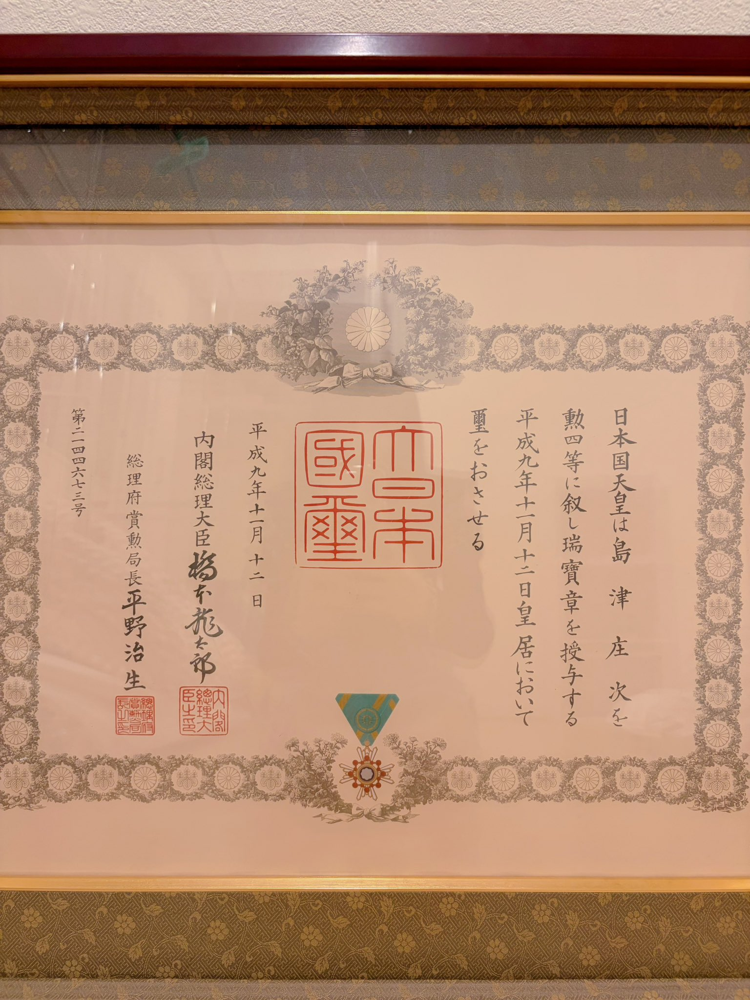
日本国天皇は島津庄次を
勲四等に叙し瑞宝章を授与する
平成九年十一月十二日皇居において
璽をおさせる
[日本國璽]
平成九年十一月十二日
内閣総理大臣 橋本龍太郎 [직인: 内閣総理大臣之印]
総理府賞勲局長 平野治生 [직인: 賞勲局長之印]
第二一四四六七三号
일본국 천황은 시마즈 쇼지(島津庄次)를
훈4등에 서하여 서보장을 수여한다
헤이세이 9년(1997년) 11월 12일 황거에서
국새를 찍게 하다
[일본국새]
헤이세이 9년(1997년) 11월 12일
내각총리대신 하시모토 류타로 [직인: 내각총리대신지인]
총리부 상훈국장 히라노 하루오 [직인: 상훈국장지인]
제2144673호
이다.
훈4등 서보장 (勲四等瑞宝章) 장이며, 이건 노인인 지방정치인에게 주는 훈장이지 전쟁 참가자에게 주는 훈장이 아니다.
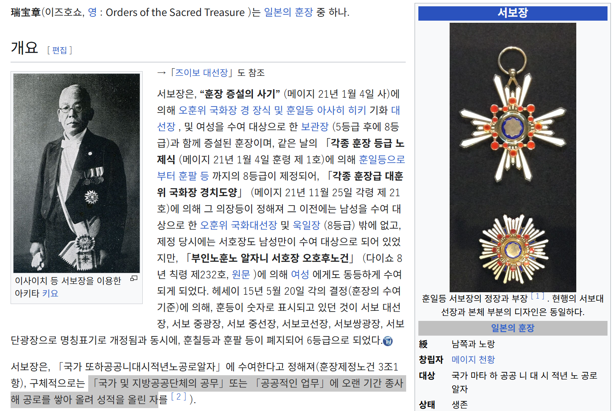
시마즈 쇼지 (島津庄次)가 어떤 사람인지는 야마나시 현 홈페이지의 역대 현의장 목록에 84번으로 나온다ㅣ.
https://www.pref.yamanashi.jp/
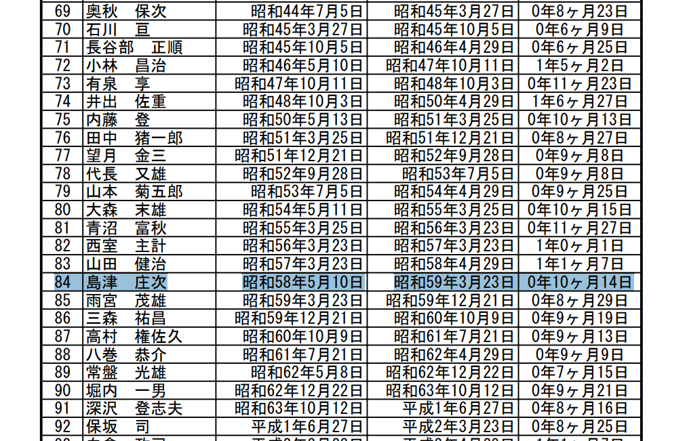
야마나시현 의회 제84대 의장 역임 (임기: 쇼와 58년/1983년 5월 10일 ~ 쇼와 59년/1984년 3월 23일)이고
https://www.y-fukushi.or.jp/renew/search/rekidai_yakuin.html
야마나시현 사회복지협의회에도 현의회 대표인 부의장으로 이름이 남아있다.
3. 다시 원문으로 돌아가 보면, 천황이 훈장을 줬다고만 되어 있지, 전쟁 공훈으로 줬다고 되어 있지는 않다.
훈장은 어디까지나 야마나시 현의회에서 장기간 의원직을 해서 받은거다.
그런대 앞에 [전쟁에 나가서 싸우다]를 붙임으로서 전쟁 공로 훈장인것 처럼 독자들의 오독을 유발하는 화법이다.
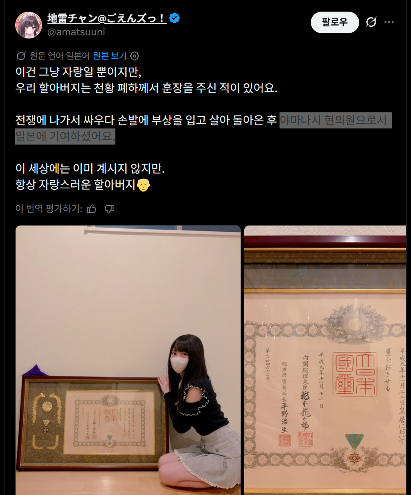
4. 참전한 전쟁은 어느 전쟁인가?
어디서 어떻게 참전했는지에 대한 내용은 전혀 명시되어 있지 않다.
오래된 정치인이니 약력 확인도 안된다.
하지만 본인이 확인한 전쟁 기간은 중일전쟁/태평양전쟁과 겹친다.
30~40년대 전쟁에 참여했어야 손녀가 50대가 되니까.
그 이외에도 2차 대전 참전 훈장 자들과 친목질을 하면서 같은 훈장을 받은 척을 하고 다니는 내용들이 있었지만 그걸 추가하려고 들어가보니 비공개 상태로 전환되었음.
예를 들면 이런거
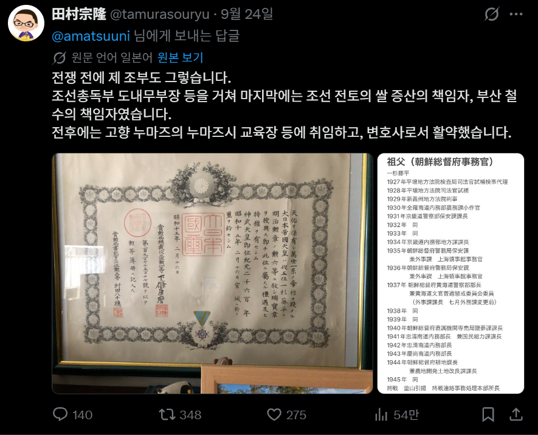
==============================
5. 이 여자가 평소에 어떤 병신 같은 소리를 하고 사느냐?
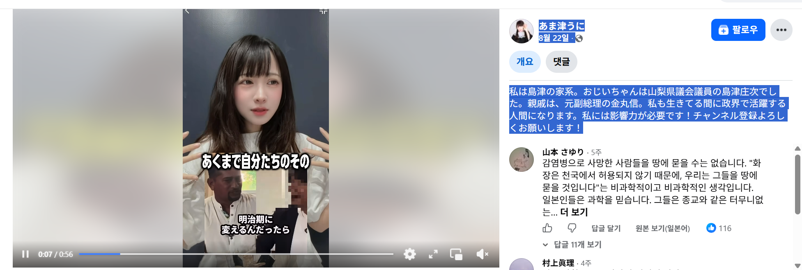
저는 시마즈(島津) 가문입니다. 할아버지는 야마나시 현의회 의원인 시마즈 쇼지(島津庄次)였습니다. 친척은 전 부총리인 가네마루 신(金丸信)입니다. 저도 살아있는 동안 정계에서 활약하는 사람이 되겠습니다. 저에게는 영향력이 필요합니다! 채널 구독 부탁드립니다!
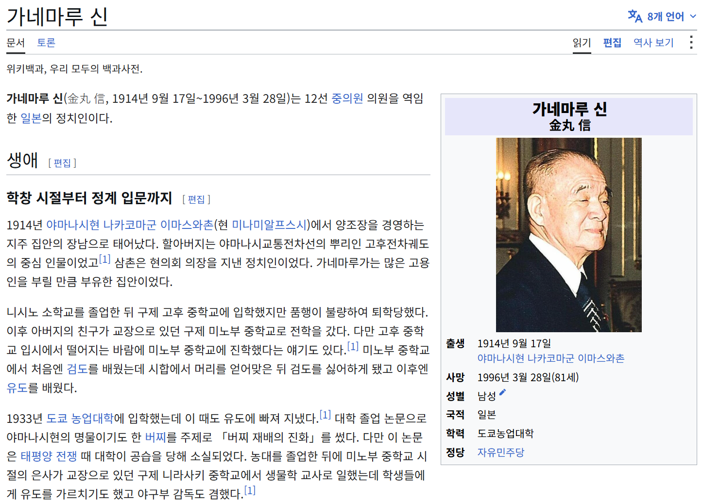
야마나시 현의 거물급 정치인인 가네마루 신도 자기 친척이라고 주장하며,
자신도 정치인이 되겠다고 주장한다.
페이스북 https://www.facebook.com/amatsuuni
은 현재도 살아있으니 가서 보면 딱 정치 어그로 넷 우익 주장을 무한 반복하는걸 컨텐츠로 삼고 있는걸 확인할 수 있다.
라고 하면서 하는 일
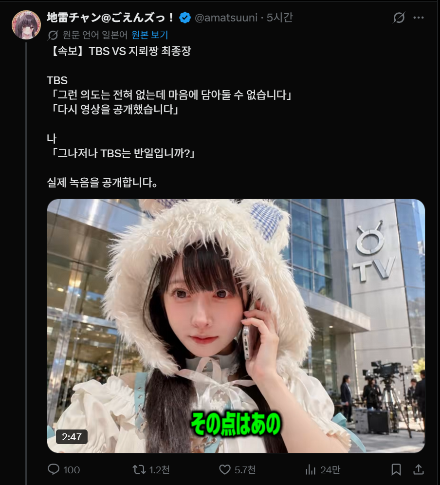
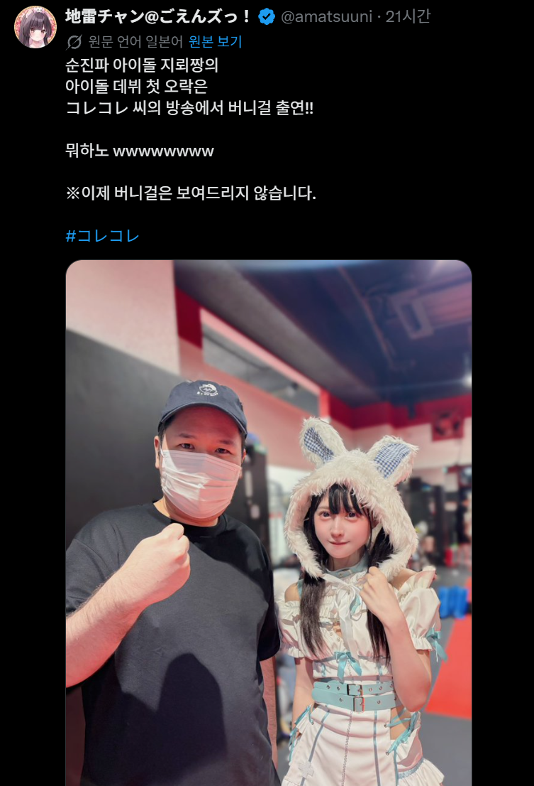
정치 어그로 계 지하 아이돌
6. 그럼 부총리 가네마루 신과의 관계는?
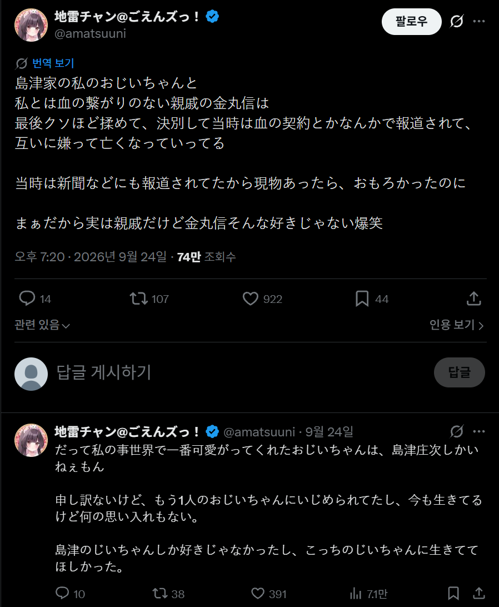
친척이라고 주장은 하지만 실제 관계는 좆도 없어서 쫄려서 이런 글도 씀.
==================
시마즈 가문인 우리 할아버지랑
나와 피가 이어지지 않은 친척인 가네마루 신은
마지막에 지독하게 다투고 결별해서 당시에는 '혈의 계약' 같은 걸로 보도되었고, 서로를 미워하며 세상을 떠났어.
당시에는 신문 등에도 보도되었으니까 실물이 있었으면 재미있었을 텐데.
뭐 그러니까 사실 친척이지만 가네마루 신을 그다지 좋아하지 않아 (폭소)
9월 24일
그야 나를 세상에서 제일 예뻐해 준 할아버지는 시마즈 쇼지밖에 없는걸.
미안하지만, 다른 할아버지 한 명한테는 괴롭힘당했었고, 지금도 살아계시지만 아무런 애정도 없어.
시마즈 할아버지밖에 안 좋아했고, 이쪽 할아버지가 살아 계셨으면 좋았을 텐데.
(참고 가네마루 신은 이미 오래전에 죽었다. 이 트윗도 맨 처음 트윗과 동일하게 (현의원 훈장을 전쟁 훈장으로 오해하게 작성), 독자에게 다른 할아버지를 가네마루 신과 오해하게 작성하는 방식이다.)
==================
7. [시마즈 가문인 우리 할아버지랑] 도 사칭으로 욕을 먹고 있다.
신슈 가문은 800년전 조상이 사츠마가문에 있었던 정도 인연이고,
이미 수백년 전에 적으로 돌아선 가문이다.
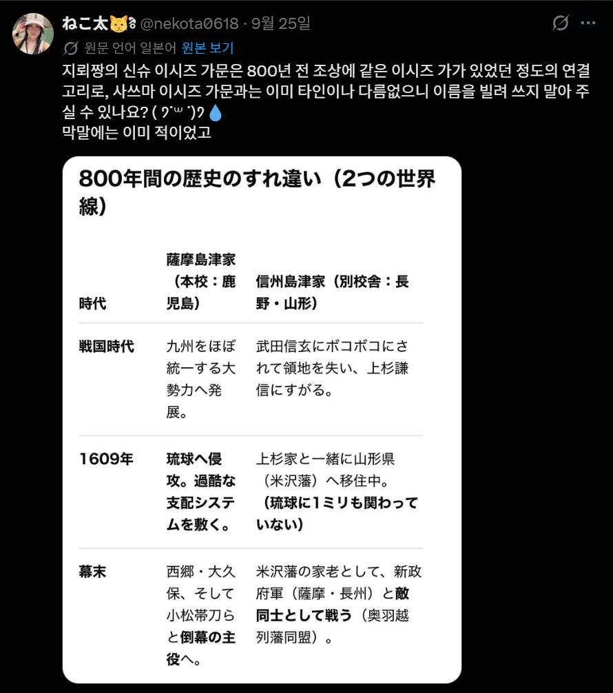
총평 : 구라인듯 구라가 아닌듯 하게 오독할 수 있는 화법으로 어그로를 끄는 정치 어그로계 지하돌 계정이다.
8. 결말
비공개 하고 튀었음.
p.s. 이번 화제 이전의 예전에 화제된 내용.
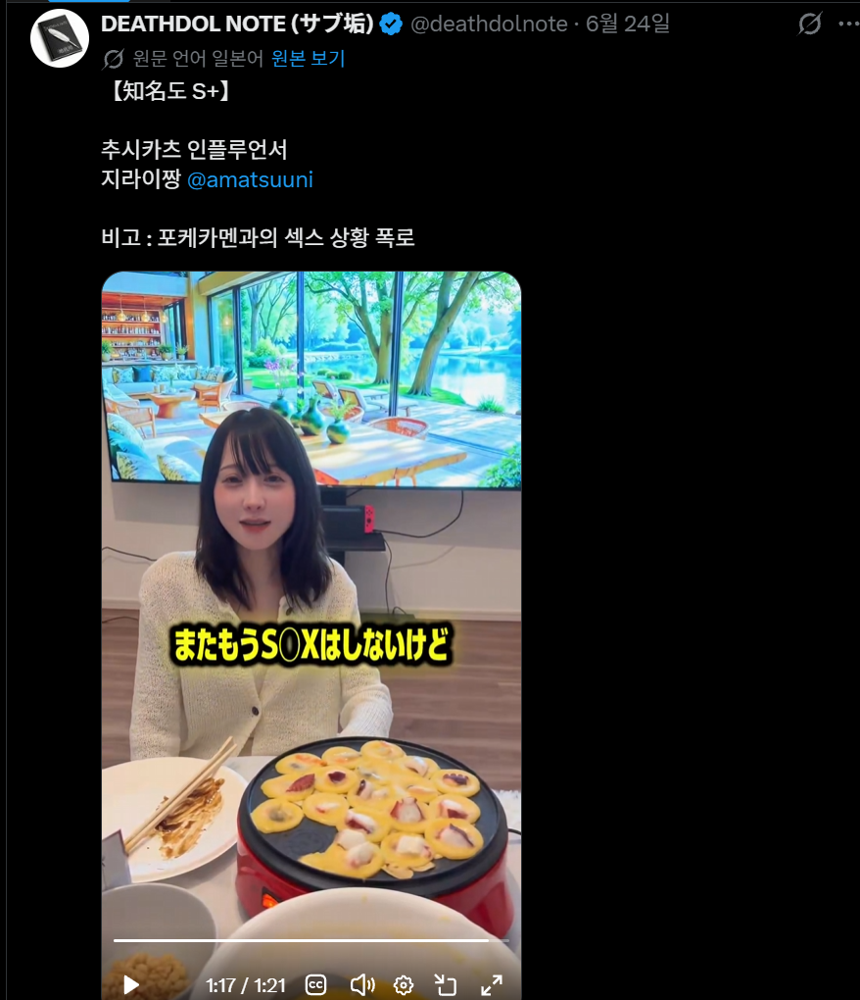
https://x.com/deathdolnote/status/2069763571182158191?s=20
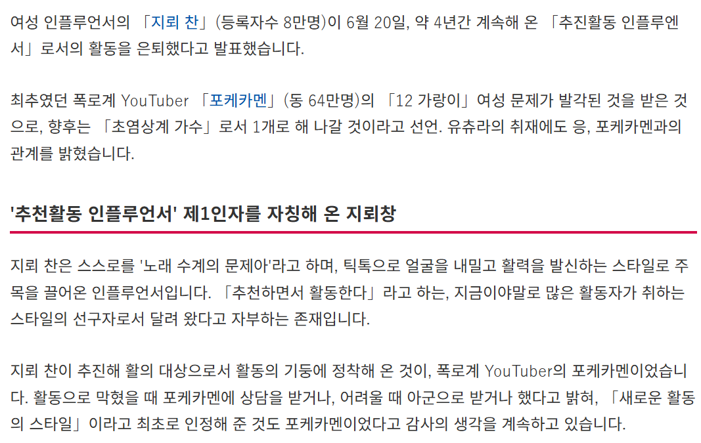
폭로계 유튜버 포켓카멘 과 SOX 했던 내용을 공개해서 어그로를 모음.
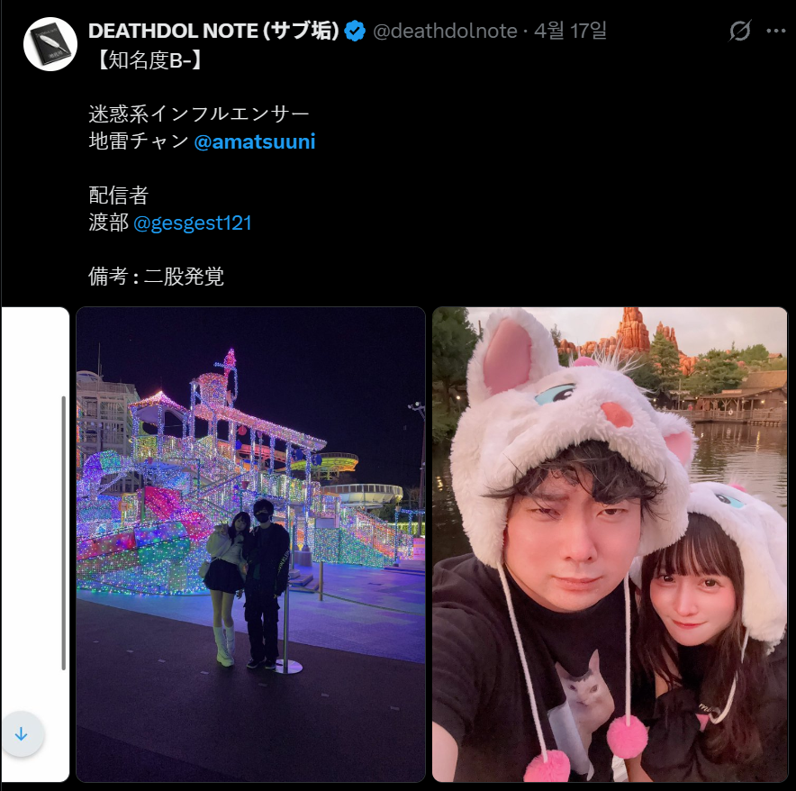
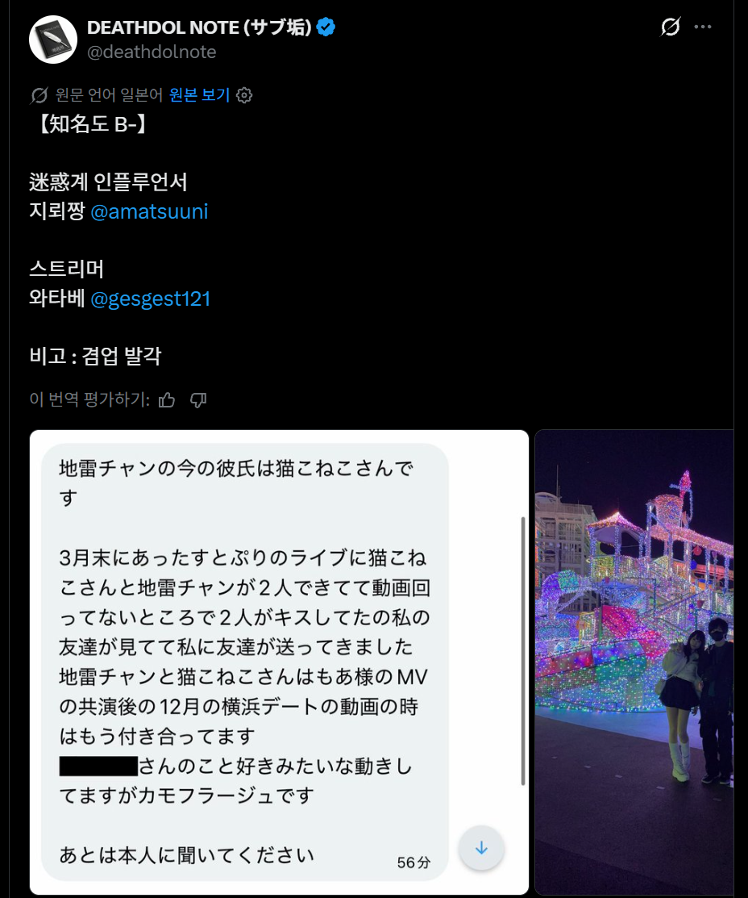
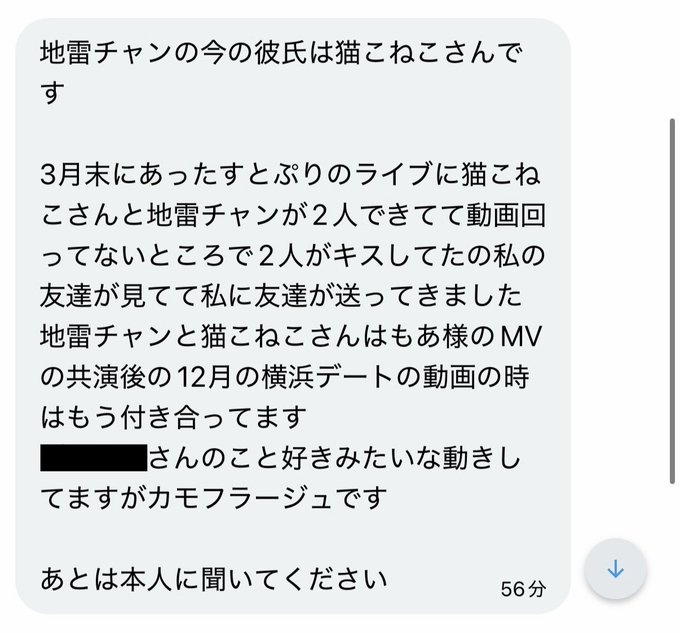
지라이찬의 지금 남친은 네코네코 씨입니다.
3월 말에 있었던 스토푸리(すとぷり)라이브에 네코네코 씨와 지라이찬이 둘이서 왔었고, 영상을 찍지 않는 곳에서 둘이 키스하고 있던 걸 제 친구가 봐서 저한테 친구가 (제보를) 보내왔습니다.
지라이찬과 네코네코 씨는 모아(もあ) 님의 뮤직비디오에 함께 출연한 후인 12월 요코하마 데이트 영상 때에는 이미 사귀고 있었습니다.
■■■ 씨를 좋아하는 듯한 행동을 하고 있습니다만 위장(카무플라주)입니다.
나머지는 본인에게 물어보세요.
스트리머 네코네코와의 양다리 등...
----------------------------------------
이제 그만 알아보자...
일본 지하돌 계의 심연을 살짝 보고 온 느낌이다.

저게 그 멘헤라인가